%load_ext autoreload
%autoreload 2Imágenes de Train
import torch
import torch.nn as nn
from train import train_model
from MNIST import train_data, val_data
from model import MLP
from utils import plot_number, plot_training_curves
SEED = 10
torch.manual_seed(SEED)
torch.cuda.manual_seed(SEED)/home/datacuber/miniconda3/lib/python3.12/site-packages/torch/cuda/__init__.py:128: UserWarning: CUDA initialization: CUDA unknown error - this may be due to an incorrectly set up environment, e.g. changing env variable CUDA_VISIBLE_DEVICES after program start. Setting the available devices to be zero. (Triggered internally at /opt/conda/conda-bld/pytorch_1720538439675/work/c10/cuda/CUDAFunctions.cpp:108.)
return torch._C._cuda_getDeviceCount() > 0Shape X: (70000, 784)
Shape y: (70000,)
Length Pytorch X: 60000
Length Pytorch X: 10000for idx in torch.randint(0, len(train_data), (5,)):
plot_number(idx.item(), train_data)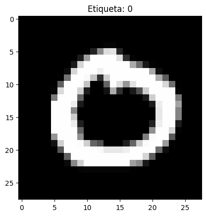
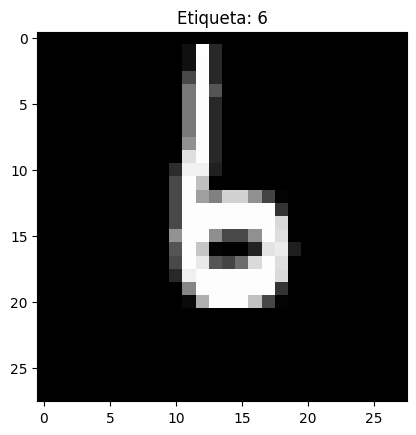
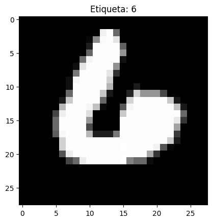
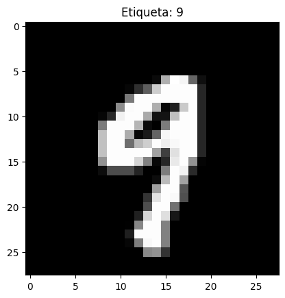
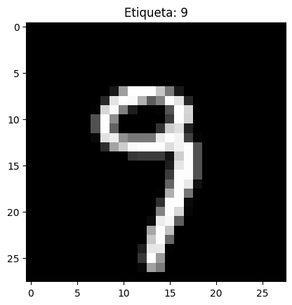
Imágenes de Test
for idx in torch.randint(0, len(val_data), (5,)):
plot_number(idx.item(), val_data)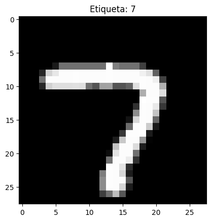
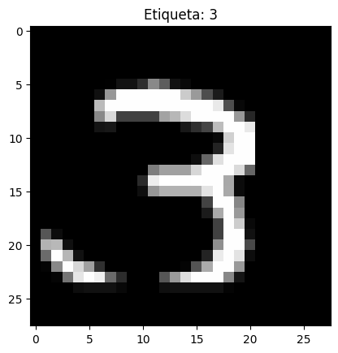

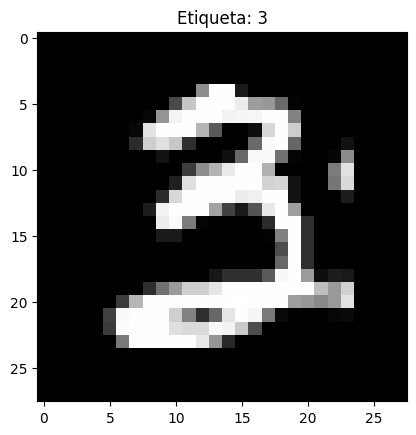
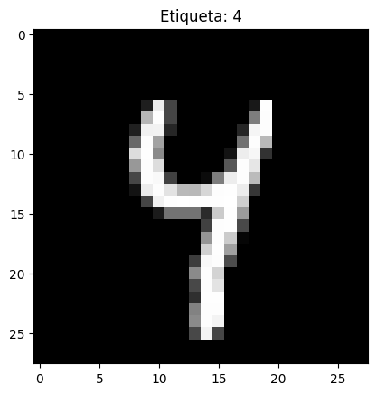
model_hp = dict(
hidden_dims=[28 * 28, 128, 64],
out_dim=10,
bn=None,
activation="sigmoid",
dropout=None,
)
training_params = dict(
num_epochs=10,
learning_rate=3e-4,
batch_size=8,
weight_decay=0,
)
model = MLP(**model_hp)
model, train_loss, validation_loss = train_model(
train_data,
val_data,
model,
training_params,
)
plot_training_curves(
train_loss,
validation_loss,
n_epochs=training_params["num_epochs"],
title="Experimento 1",
)Epoch: 1: Time: 17.85 - Train Loss: 0.6187 - Validation Loss: 0.3342 - Train F1-Score: 0.8513 - Validation F1-Score: 0.9068
Epoch: 2: Time: 18.71 - Train Loss: 0.2956 - Validation Loss: 0.2787 - Train F1-Score: 0.8821 - Validation F1-Score: 0.9116
Epoch: 3: Time: 18.80 - Train Loss: 0.2588 - Validation Loss: 0.2525 - Train F1-Score: 0.8956 - Validation F1-Score: 0.9167
Epoch: 4: Time: 18.67 - Train Loss: 0.2332 - Validation Loss: 0.2267 - Train F1-Score: 0.9039 - Validation F1-Score: 0.9201
Epoch: 5: Time: 18.09 - Train Loss: 0.2153 - Validation Loss: 0.2328 - Train F1-Score: 0.9100 - Validation F1-Score: 0.9220
Epoch: 6: Time: 18.91 - Train Loss: 0.2138 - Validation Loss: 0.2231 - Train F1-Score: 0.9142 - Validation F1-Score: 0.9241
Epoch: 7: Time: 18.57 - Train Loss: 0.1943 - Validation Loss: 0.2039 - Train F1-Score: 0.9179 - Validation F1-Score: 0.9264
Epoch: 8: Time: 18.55 - Train Loss: 0.1794 - Validation Loss: 0.2007 - Train F1-Score: 0.9213 - Validation F1-Score: 0.9277
Epoch: 9: Time: 19.13 - Train Loss: 0.1750 - Validation Loss: 0.1909 - Train F1-Score: 0.9240 - Validation F1-Score: 0.9292
Epoch: 10: Time: 19.15 - Train Loss: 0.1623 - Validation Loss: 0.1905 - Train F1-Score: 0.9266 - Validation F1-Score: 0.9304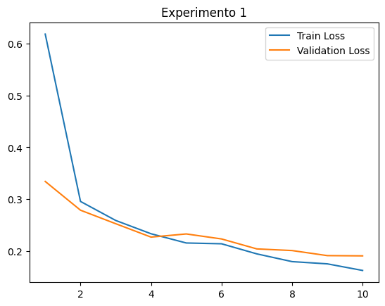
model_hp = dict(
hidden_dims=[28 * 28, 128, 64],
out_dim=10,
bn=None,
activation="relu",
dropout=None,
)
training_params = dict(
num_epochs=10,
learning_rate=3e-4,
batch_size=8,
weight_decay=0,
)
model = MLP(**model_hp)
model, train_loss, validation_loss = train_model(
train_data,
val_data,
model,
training_params,
)
plot_training_curves(
train_loss,
validation_loss,
n_epochs=training_params["num_epochs"],
title="Experimento 2",
)Epoch: 1: Time: 18.11 - Train Loss: 0.3023 - Validation Loss: 0.2102 - Train F1-Score: 0.9169 - Validation F1-Score: 0.9407
Epoch: 2: Time: 18.13 - Train Loss: 0.1477 - Validation Loss: 0.1460 - Train F1-Score: 0.9370 - Validation F1-Score: 0.9502
Epoch: 3: Time: 18.33 - Train Loss: 0.1089 - Validation Loss: 0.1496 - Train F1-Score: 0.9473 - Validation F1-Score: 0.9541
Epoch: 4: Time: 18.49 - Train Loss: 0.0884 - Validation Loss: 0.1343 - Train F1-Score: 0.9538 - Validation F1-Score: 0.9571
Epoch: 5: Time: 18.71 - Train Loss: 0.0790 - Validation Loss: 0.1444 - Train F1-Score: 0.9584 - Validation F1-Score: 0.9588
Epoch: 6: Time: 18.95 - Train Loss: 0.0681 - Validation Loss: 0.1420 - Train F1-Score: 0.9618 - Validation F1-Score: 0.9607
Epoch: 7: Time: 18.60 - Train Loss: 0.0633 - Validation Loss: 0.1450 - Train F1-Score: 0.9646 - Validation F1-Score: 0.9616
Epoch: 8: Time: 18.83 - Train Loss: 0.0605 - Validation Loss: 0.1477 - Train F1-Score: 0.9669 - Validation F1-Score: 0.9629
Epoch: 9: Time: 19.20 - Train Loss: 0.0525 - Validation Loss: 0.2143 - Train F1-Score: 0.9689 - Validation F1-Score: 0.9628
Epoch: 10: Time: 19.20 - Train Loss: 0.0493 - Validation Loss: 0.1911 - Train F1-Score: 0.9707 - Validation F1-Score: 0.9638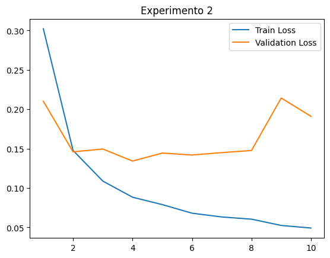
model_hp = dict(
hidden_dims=[28 * 28, 128, 64, 32],
out_dim=10,
bn="pre",
activation="relu",
dropout=None,
)
training_params = dict(
num_epochs=30,
learning_rate=3e-4,
batch_size=1024,
weight_decay=0,
)
model = MLP(**model_hp)
model, train_loss, validation_loss = train_model(
train_data,
val_data,
model,
training_params,
)
plot_training_curves(
train_loss,
validation_loss,
n_epochs=training_params["num_epochs"],
title="Experimento 3",
)Epoch: 1: Time: 1.24 - Train Loss: 1.5230 - Validation Loss: 1.1812 - Train F1-Score: 0.6912 - Validation F1-Score: 0.8593
Epoch: 2: Time: 1.25 - Train Loss: 0.9858 - Validation Loss: 0.8456 - Train F1-Score: 0.7967 - Validation F1-Score: 0.8913
Epoch: 3: Time: 1.25 - Train Loss: 0.7082 - Validation Loss: 0.6310 - Train F1-Score: 0.8437 - Validation F1-Score: 0.9086
Epoch: 4: Time: 1.27 - Train Loss: 0.5254 - Validation Loss: 0.4798 - Train F1-Score: 0.8708 - Validation F1-Score: 0.9197
Epoch: 5: Time: 1.26 - Train Loss: 0.4004 - Validation Loss: 0.3697 - Train F1-Score: 0.8890 - Validation F1-Score: 0.9282
Epoch: 6: Time: 1.21 - Train Loss: 0.3134 - Validation Loss: 0.2997 - Train F1-Score: 0.9021 - Validation F1-Score: 0.9343
Epoch: 7: Time: 1.26 - Train Loss: 0.2508 - Validation Loss: 0.2504 - Train F1-Score: 0.9123 - Validation F1-Score: 0.9391
Epoch: 8: Time: 1.21 - Train Loss: 0.2051 - Validation Loss: 0.2122 - Train F1-Score: 0.9204 - Validation F1-Score: 0.9432
Epoch: 9: Time: 1.24 - Train Loss: 0.1692 - Validation Loss: 0.1838 - Train F1-Score: 0.9273 - Validation F1-Score: 0.9465
Epoch: 10: Time: 1.23 - Train Loss: 0.1425 - Validation Loss: 0.1658 - Train F1-Score: 0.9330 - Validation F1-Score: 0.9493
Epoch: 11: Time: 1.23 - Train Loss: 0.1216 - Validation Loss: 0.1514 - Train F1-Score: 0.9379 - Validation F1-Score: 0.9516
Epoch: 12: Time: 1.26 - Train Loss: 0.1034 - Validation Loss: 0.1393 - Train F1-Score: 0.9422 - Validation F1-Score: 0.9537
Epoch: 13: Time: 1.22 - Train Loss: 0.0903 - Validation Loss: 0.1293 - Train F1-Score: 0.9459 - Validation F1-Score: 0.9554
Epoch: 14: Time: 1.23 - Train Loss: 0.0779 - Validation Loss: 0.1214 - Train F1-Score: 0.9492 - Validation F1-Score: 0.9569
Epoch: 15: Time: 1.24 - Train Loss: 0.0681 - Validation Loss: 0.1119 - Train F1-Score: 0.9521 - Validation F1-Score: 0.9583
Epoch: 16: Time: 1.21 - Train Loss: 0.0598 - Validation Loss: 0.1079 - Train F1-Score: 0.9548 - Validation F1-Score: 0.9595
Epoch: 17: Time: 1.20 - Train Loss: 0.0528 - Validation Loss: 0.1026 - Train F1-Score: 0.9572 - Validation F1-Score: 0.9605
Epoch: 18: Time: 1.20 - Train Loss: 0.0460 - Validation Loss: 0.1006 - Train F1-Score: 0.9594 - Validation F1-Score: 0.9614
Epoch: 19: Time: 1.21 - Train Loss: 0.0410 - Validation Loss: 0.0967 - Train F1-Score: 0.9614 - Validation F1-Score: 0.9623
Epoch: 20: Time: 1.24 - Train Loss: 0.0363 - Validation Loss: 0.0925 - Train F1-Score: 0.9632 - Validation F1-Score: 0.9631
Epoch: 21: Time: 1.24 - Train Loss: 0.0324 - Validation Loss: 0.0910 - Train F1-Score: 0.9649 - Validation F1-Score: 0.9638
Epoch: 22: Time: 1.23 - Train Loss: 0.0290 - Validation Loss: 0.0917 - Train F1-Score: 0.9664 - Validation F1-Score: 0.9644
Epoch: 23: Time: 1.23 - Train Loss: 0.0260 - Validation Loss: 0.0875 - Train F1-Score: 0.9678 - Validation F1-Score: 0.9650
Epoch: 24: Time: 1.25 - Train Loss: 0.0234 - Validation Loss: 0.0863 - Train F1-Score: 0.9691 - Validation F1-Score: 0.9656
Epoch: 25: Time: 1.24 - Train Loss: 0.0210 - Validation Loss: 0.0852 - Train F1-Score: 0.9703 - Validation F1-Score: 0.9661
Epoch: 26: Time: 1.24 - Train Loss: 0.0188 - Validation Loss: 0.0854 - Train F1-Score: 0.9715 - Validation F1-Score: 0.9665
Epoch: 27: Time: 1.22 - Train Loss: 0.0173 - Validation Loss: 0.0840 - Train F1-Score: 0.9725 - Validation F1-Score: 0.9670
Epoch: 28: Time: 1.25 - Train Loss: 0.0158 - Validation Loss: 0.0824 - Train F1-Score: 0.9735 - Validation F1-Score: 0.9674
Epoch: 29: Time: 1.22 - Train Loss: 0.0144 - Validation Loss: 0.0822 - Train F1-Score: 0.9744 - Validation F1-Score: 0.9678
Epoch: 30: Time: 1.22 - Train Loss: 0.0130 - Validation Loss: 0.0824 - Train F1-Score: 0.9752 - Validation F1-Score: 0.9681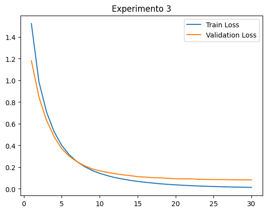
model_hp = dict(
hidden_dims=[28 * 28, 128, 64, 32],
out_dim=10,
bn="post",
activation="relu",
dropout=None,
)
training_params = dict(
num_epochs=30,
learning_rate=3e-4,
batch_size=1024,
weight_decay=0,
)
model = MLP(**model_hp)
model, train_loss, validation_loss = train_model(
train_data,
val_data,
model,
training_params,
)
plot_training_curves(
train_loss,
validation_loss,
n_epochs=training_params["num_epochs"],
title="Experimento 4",
)Epoch: 1: Time: 1.25 - Train Loss: 1.2365 - Validation Loss: 0.7723 - Train F1-Score: 0.7402 - Validation F1-Score: 0.9006
Epoch: 2: Time: 1.20 - Train Loss: 0.6214 - Validation Loss: 0.4916 - Train F1-Score: 0.8319 - Validation F1-Score: 0.9183
Epoch: 3: Time: 1.26 - Train Loss: 0.4079 - Validation Loss: 0.3480 - Train F1-Score: 0.8702 - Validation F1-Score: 0.9293
Epoch: 4: Time: 1.30 - Train Loss: 0.2917 - Validation Loss: 0.2667 - Train F1-Score: 0.8926 - Validation F1-Score: 0.9372
Epoch: 5: Time: 1.22 - Train Loss: 0.2207 - Validation Loss: 0.2142 - Train F1-Score: 0.9076 - Validation F1-Score: 0.9425
Epoch: 6: Time: 1.23 - Train Loss: 0.1744 - Validation Loss: 0.1791 - Train F1-Score: 0.9184 - Validation F1-Score: 0.9469
Epoch: 7: Time: 1.27 - Train Loss: 0.1407 - Validation Loss: 0.1565 - Train F1-Score: 0.9269 - Validation F1-Score: 0.9504
Epoch: 8: Time: 1.24 - Train Loss: 0.1150 - Validation Loss: 0.1393 - Train F1-Score: 0.9338 - Validation F1-Score: 0.9530
Epoch: 9: Time: 1.22 - Train Loss: 0.0963 - Validation Loss: 0.1283 - Train F1-Score: 0.9395 - Validation F1-Score: 0.9553
Epoch: 10: Time: 1.22 - Train Loss: 0.0815 - Validation Loss: 0.1196 - Train F1-Score: 0.9443 - Validation F1-Score: 0.9571
Epoch: 11: Time: 1.22 - Train Loss: 0.0687 - Validation Loss: 0.1112 - Train F1-Score: 0.9484 - Validation F1-Score: 0.9586
Epoch: 12: Time: 1.23 - Train Loss: 0.0582 - Validation Loss: 0.1054 - Train F1-Score: 0.9521 - Validation F1-Score: 0.9599
Epoch: 13: Time: 1.26 - Train Loss: 0.0499 - Validation Loss: 0.1002 - Train F1-Score: 0.9553 - Validation F1-Score: 0.9611
Epoch: 14: Time: 1.21 - Train Loss: 0.0429 - Validation Loss: 0.0986 - Train F1-Score: 0.9581 - Validation F1-Score: 0.9621
Epoch: 15: Time: 1.22 - Train Loss: 0.0369 - Validation Loss: 0.0971 - Train F1-Score: 0.9606 - Validation F1-Score: 0.9630
Epoch: 16: Time: 1.22 - Train Loss: 0.0323 - Validation Loss: 0.0924 - Train F1-Score: 0.9629 - Validation F1-Score: 0.9638
Epoch: 17: Time: 1.21 - Train Loss: 0.0275 - Validation Loss: 0.0909 - Train F1-Score: 0.9650 - Validation F1-Score: 0.9645
Epoch: 18: Time: 1.20 - Train Loss: 0.0243 - Validation Loss: 0.0904 - Train F1-Score: 0.9668 - Validation F1-Score: 0.9652
Epoch: 19: Time: 1.22 - Train Loss: 0.0210 - Validation Loss: 0.0897 - Train F1-Score: 0.9685 - Validation F1-Score: 0.9658
Epoch: 20: Time: 1.26 - Train Loss: 0.0187 - Validation Loss: 0.0875 - Train F1-Score: 0.9700 - Validation F1-Score: 0.9663
Epoch: 21: Time: 1.23 - Train Loss: 0.0164 - Validation Loss: 0.0899 - Train F1-Score: 0.9714 - Validation F1-Score: 0.9668
Epoch: 22: Time: 1.29 - Train Loss: 0.0146 - Validation Loss: 0.0895 - Train F1-Score: 0.9726 - Validation F1-Score: 0.9672
Epoch: 23: Time: 1.27 - Train Loss: 0.0128 - Validation Loss: 0.0888 - Train F1-Score: 0.9738 - Validation F1-Score: 0.9676
Epoch: 24: Time: 1.23 - Train Loss: 0.0113 - Validation Loss: 0.0877 - Train F1-Score: 0.9749 - Validation F1-Score: 0.9679
Epoch: 25: Time: 1.24 - Train Loss: 0.0101 - Validation Loss: 0.0893 - Train F1-Score: 0.9759 - Validation F1-Score: 0.9683
Epoch: 26: Time: 1.21 - Train Loss: 0.0091 - Validation Loss: 0.0904 - Train F1-Score: 0.9768 - Validation F1-Score: 0.9685
Epoch: 27: Time: 1.25 - Train Loss: 0.0082 - Validation Loss: 0.0914 - Train F1-Score: 0.9776 - Validation F1-Score: 0.9688
Epoch: 28: Time: 1.22 - Train Loss: 0.0073 - Validation Loss: 0.0916 - Train F1-Score: 0.9784 - Validation F1-Score: 0.9690
Epoch: 29: Time: 1.22 - Train Loss: 0.0067 - Validation Loss: 0.0911 - Train F1-Score: 0.9792 - Validation F1-Score: 0.9693
Epoch: 30: Time: 1.20 - Train Loss: 0.0061 - Validation Loss: 0.0926 - Train F1-Score: 0.9799 - Validation F1-Score: 0.9695
model_hp = dict(
hidden_dims=[28 * 28, 128, 64, 32],
out_dim=10,
bn="post",
activation="relu",
dropout=0.2,
)
training_params = dict(
num_epochs=30,
learning_rate=3e-4,
batch_size=1024,
weight_decay=0,
)
model = MLP(**model_hp)
model, train_loss, validation_loss = train_model(
train_data,
val_data,
model,
training_params,
)
plot_training_curves(
train_loss,
validation_loss,
n_epochs=training_params["num_epochs"],
title="Experimento 5",
)Epoch: 1: Time: 1.29 - Train Loss: 1.4272 - Validation Loss: 0.8666 - Train F1-Score: 0.6252 - Validation F1-Score: 0.8772
Epoch: 2: Time: 1.25 - Train Loss: 0.8105 - Validation Loss: 0.5558 - Train F1-Score: 0.7493 - Validation F1-Score: 0.8961
Epoch: 3: Time: 1.25 - Train Loss: 0.5659 - Validation Loss: 0.3859 - Train F1-Score: 0.8038 - Validation F1-Score: 0.9092
Epoch: 4: Time: 1.25 - Train Loss: 0.4251 - Validation Loss: 0.2933 - Train F1-Score: 0.8356 - Validation F1-Score: 0.9181
Epoch: 5: Time: 1.25 - Train Loss: 0.3338 - Validation Loss: 0.2331 - Train F1-Score: 0.8570 - Validation F1-Score: 0.9253
Epoch: 6: Time: 1.27 - Train Loss: 0.2740 - Validation Loss: 0.1935 - Train F1-Score: 0.8725 - Validation F1-Score: 0.9308
Epoch: 7: Time: 1.27 - Train Loss: 0.2323 - Validation Loss: 0.1663 - Train F1-Score: 0.8845 - Validation F1-Score: 0.9353
Epoch: 8: Time: 1.25 - Train Loss: 0.1972 - Validation Loss: 0.1487 - Train F1-Score: 0.8942 - Validation F1-Score: 0.9389
Epoch: 9: Time: 1.26 - Train Loss: 0.1748 - Validation Loss: 0.1326 - Train F1-Score: 0.9020 - Validation F1-Score: 0.9421
Epoch: 10: Time: 1.27 - Train Loss: 0.1571 - Validation Loss: 0.1228 - Train F1-Score: 0.9085 - Validation F1-Score: 0.9448
Epoch: 11: Time: 1.26 - Train Loss: 0.1385 - Validation Loss: 0.1150 - Train F1-Score: 0.9142 - Validation F1-Score: 0.9471
Epoch: 12: Time: 1.25 - Train Loss: 0.1281 - Validation Loss: 0.1099 - Train F1-Score: 0.9191 - Validation F1-Score: 0.9491
Epoch: 13: Time: 1.39 - Train Loss: 0.1142 - Validation Loss: 0.1044 - Train F1-Score: 0.9234 - Validation F1-Score: 0.9509
Epoch: 14: Time: 1.29 - Train Loss: 0.1071 - Validation Loss: 0.0984 - Train F1-Score: 0.9272 - Validation F1-Score: 0.9525
Epoch: 15: Time: 1.27 - Train Loss: 0.0987 - Validation Loss: 0.0947 - Train F1-Score: 0.9305 - Validation F1-Score: 0.9539
Epoch: 16: Time: 1.26 - Train Loss: 0.0923 - Validation Loss: 0.0940 - Train F1-Score: 0.9335 - Validation F1-Score: 0.9551
Epoch: 17: Time: 1.30 - Train Loss: 0.0860 - Validation Loss: 0.0930 - Train F1-Score: 0.9362 - Validation F1-Score: 0.9562
Epoch: 18: Time: 1.24 - Train Loss: 0.0814 - Validation Loss: 0.0886 - Train F1-Score: 0.9387 - Validation F1-Score: 0.9572
Epoch: 19: Time: 1.25 - Train Loss: 0.0751 - Validation Loss: 0.0900 - Train F1-Score: 0.9410 - Validation F1-Score: 0.9581
Epoch: 20: Time: 1.25 - Train Loss: 0.0693 - Validation Loss: 0.0845 - Train F1-Score: 0.9431 - Validation F1-Score: 0.9591
Epoch: 21: Time: 1.24 - Train Loss: 0.0662 - Validation Loss: 0.0856 - Train F1-Score: 0.9451 - Validation F1-Score: 0.9599
Epoch: 22: Time: 1.23 - Train Loss: 0.0632 - Validation Loss: 0.0834 - Train F1-Score: 0.9468 - Validation F1-Score: 0.9606
Epoch: 23: Time: 1.24 - Train Loss: 0.0606 - Validation Loss: 0.0817 - Train F1-Score: 0.9485 - Validation F1-Score: 0.9613
Epoch: 24: Time: 1.25 - Train Loss: 0.0558 - Validation Loss: 0.0835 - Train F1-Score: 0.9501 - Validation F1-Score: 0.9619
Epoch: 25: Time: 1.25 - Train Loss: 0.0540 - Validation Loss: 0.0842 - Train F1-Score: 0.9515 - Validation F1-Score: 0.9625
Epoch: 26: Time: 1.25 - Train Loss: 0.0534 - Validation Loss: 0.0852 - Train F1-Score: 0.9529 - Validation F1-Score: 0.9631
Epoch: 27: Time: 1.24 - Train Loss: 0.0487 - Validation Loss: 0.0832 - Train F1-Score: 0.9542 - Validation F1-Score: 0.9636
Epoch: 28: Time: 1.30 - Train Loss: 0.0474 - Validation Loss: 0.0818 - Train F1-Score: 0.9554 - Validation F1-Score: 0.9641
Epoch: 29: Time: 1.24 - Train Loss: 0.0438 - Validation Loss: 0.0841 - Train F1-Score: 0.9565 - Validation F1-Score: 0.9646
Epoch: 30: Time: 1.27 - Train Loss: 0.0450 - Validation Loss: 0.0844 - Train F1-Score: 0.9576 - Validation F1-Score: 0.9650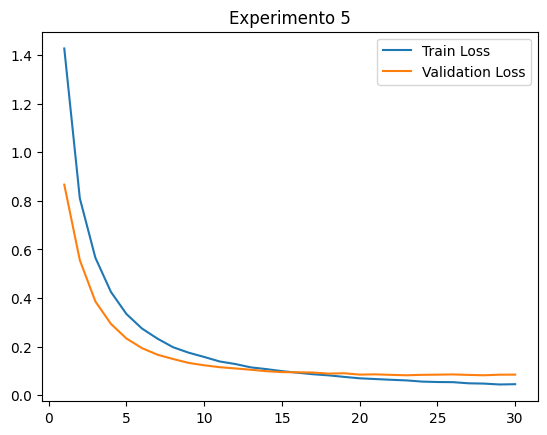
model_hp = dict(
hidden_dims=[28 * 28, 128, 64, 32],
out_dim=10,
bn="post",
activation="relu",
dropout=0.2,
)
training_params = dict(
num_epochs=30,
learning_rate=3e-4,
batch_size=1024,
weight_decay=0.3,
)
model = MLP(**model_hp)
model, train_loss, validation_loss = train_model(
train_data,
val_data,
model,
training_params,
)
plot_training_curves(
train_loss,
validation_loss,
n_epochs=training_params["num_epochs"],
title="Experimento 6",
)Epoch: 1: Time: 1.37 - Train Loss: 1.5412 - Validation Loss: 1.2300 - Train F1-Score: 0.5831 - Validation F1-Score: 0.8396
Epoch: 2: Time: 1.26 - Train Loss: 1.0508 - Validation Loss: 1.0044 - Train F1-Score: 0.7156 - Validation F1-Score: 0.8720
Epoch: 3: Time: 1.24 - Train Loss: 0.8645 - Validation Loss: 0.8241 - Train F1-Score: 0.7807 - Validation F1-Score: 0.8948
Epoch: 4: Time: 1.26 - Train Loss: 0.7400 - Validation Loss: 0.7048 - Train F1-Score: 0.8202 - Validation F1-Score: 0.9085
Epoch: 5: Time: 1.25 - Train Loss: 0.6592 - Validation Loss: 0.6465 - Train F1-Score: 0.8464 - Validation F1-Score: 0.9190
Epoch: 6: Time: 1.27 - Train Loss: 0.6085 - Validation Loss: 0.6152 - Train F1-Score: 0.8647 - Validation F1-Score: 0.9266
Epoch: 7: Time: 1.24 - Train Loss: 0.5799 - Validation Loss: 0.5953 - Train F1-Score: 0.8785 - Validation F1-Score: 0.9317
Epoch: 8: Time: 1.24 - Train Loss: 0.5657 - Validation Loss: 0.5795 - Train F1-Score: 0.8890 - Validation F1-Score: 0.9363
Epoch: 9: Time: 1.22 - Train Loss: 0.5596 - Validation Loss: 0.5566 - Train F1-Score: 0.8975 - Validation F1-Score: 0.9398
Epoch: 10: Time: 1.23 - Train Loss: 0.5634 - Validation Loss: 0.5675 - Train F1-Score: 0.9043 - Validation F1-Score: 0.9424
Epoch: 11: Time: 1.25 - Train Loss: 0.5690 - Validation Loss: 0.5676 - Train F1-Score: 0.9099 - Validation F1-Score: 0.9444
Epoch: 12: Time: 1.30 - Train Loss: 0.5781 - Validation Loss: 0.5484 - Train F1-Score: 0.9146 - Validation F1-Score: 0.9463
Epoch: 13: Time: 1.23 - Train Loss: 0.5908 - Validation Loss: 0.5629 - Train F1-Score: 0.9186 - Validation F1-Score: 0.9479
Epoch: 14: Time: 1.26 - Train Loss: 0.5983 - Validation Loss: 0.5731 - Train F1-Score: 0.9221 - Validation F1-Score: 0.9492
Epoch: 15: Time: 1.26 - Train Loss: 0.6134 - Validation Loss: 0.6040 - Train F1-Score: 0.9251 - Validation F1-Score: 0.9501
Epoch: 16: Time: 1.31 - Train Loss: 0.6237 - Validation Loss: 0.6117 - Train F1-Score: 0.9278 - Validation F1-Score: 0.9510
Epoch: 17: Time: 1.26 - Train Loss: 0.6367 - Validation Loss: 0.6126 - Train F1-Score: 0.9302 - Validation F1-Score: 0.9520
Epoch: 18: Time: 1.26 - Train Loss: 0.6540 - Validation Loss: 0.6300 - Train F1-Score: 0.9322 - Validation F1-Score: 0.9529
Epoch: 19: Time: 1.27 - Train Loss: 0.6692 - Validation Loss: 0.6597 - Train F1-Score: 0.9340 - Validation F1-Score: 0.9537
Epoch: 20: Time: 1.26 - Train Loss: 0.6827 - Validation Loss: 0.6639 - Train F1-Score: 0.9358 - Validation F1-Score: 0.9545
Epoch: 21: Time: 1.26 - Train Loss: 0.6989 - Validation Loss: 0.6769 - Train F1-Score: 0.9373 - Validation F1-Score: 0.9553
Epoch: 22: Time: 1.26 - Train Loss: 0.7151 - Validation Loss: 0.6974 - Train F1-Score: 0.9387 - Validation F1-Score: 0.9558
Epoch: 23: Time: 1.26 - Train Loss: 0.7313 - Validation Loss: 0.7127 - Train F1-Score: 0.9400 - Validation F1-Score: 0.9563
Epoch: 24: Time: 1.26 - Train Loss: 0.7491 - Validation Loss: 0.7528 - Train F1-Score: 0.9412 - Validation F1-Score: 0.9565
Epoch: 25: Time: 1.31 - Train Loss: 0.7678 - Validation Loss: 0.7650 - Train F1-Score: 0.9423 - Validation F1-Score: 0.9569
Epoch: 26: Time: 1.25 - Train Loss: 0.7861 - Validation Loss: 0.7787 - Train F1-Score: 0.9433 - Validation F1-Score: 0.9573
Epoch: 27: Time: 1.25 - Train Loss: 0.8046 - Validation Loss: 0.7940 - Train F1-Score: 0.9442 - Validation F1-Score: 0.9577
Epoch: 28: Time: 1.27 - Train Loss: 0.8264 - Validation Loss: 0.8187 - Train F1-Score: 0.9451 - Validation F1-Score: 0.9581
Epoch: 29: Time: 1.28 - Train Loss: 0.8467 - Validation Loss: 0.8258 - Train F1-Score: 0.9458 - Validation F1-Score: 0.9584
Epoch: 30: Time: 1.25 - Train Loss: 0.8630 - Validation Loss: 0.8474 - Train F1-Score: 0.9466 - Validation F1-Score: 0.9587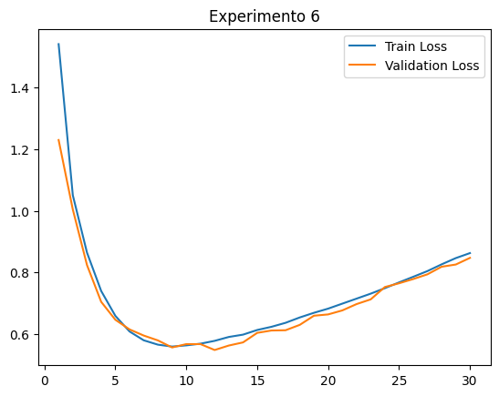